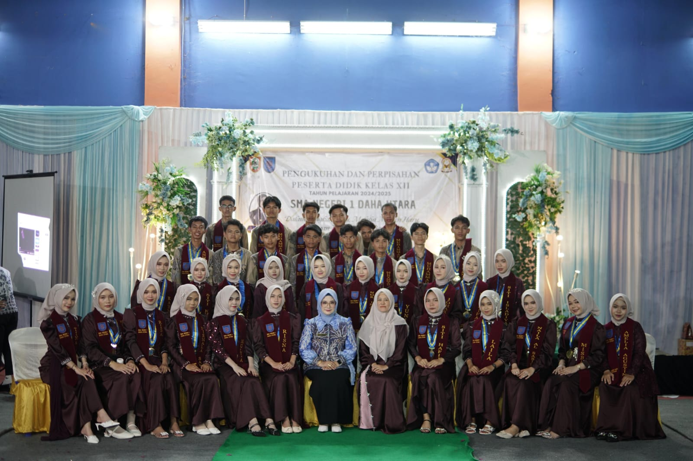
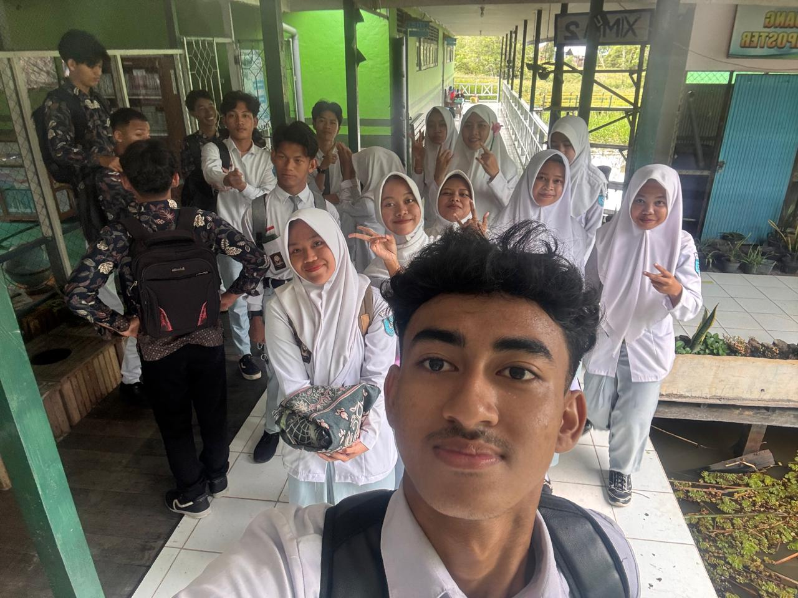
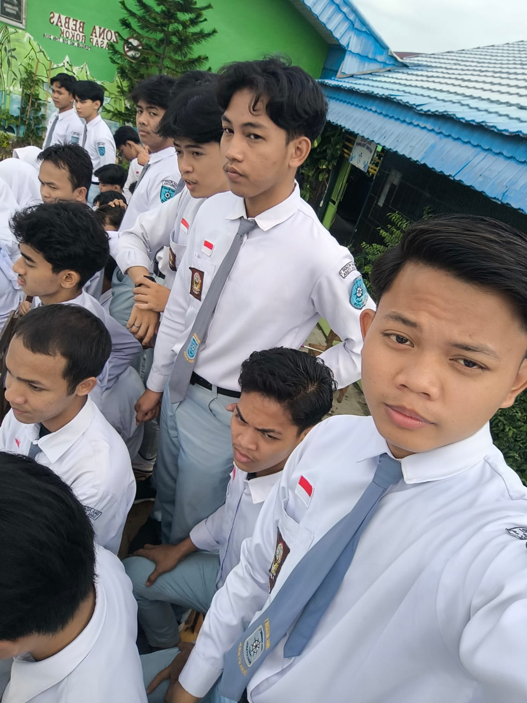
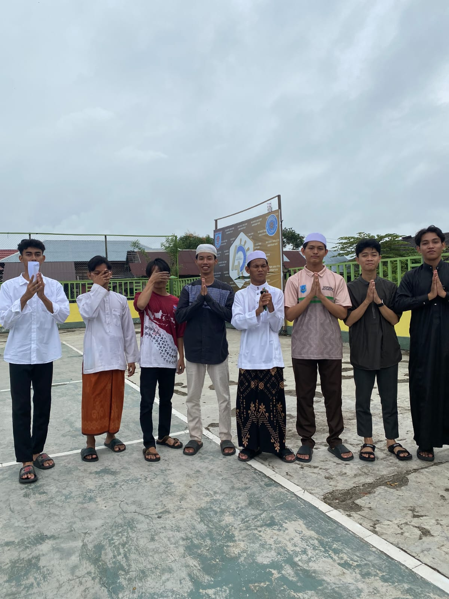
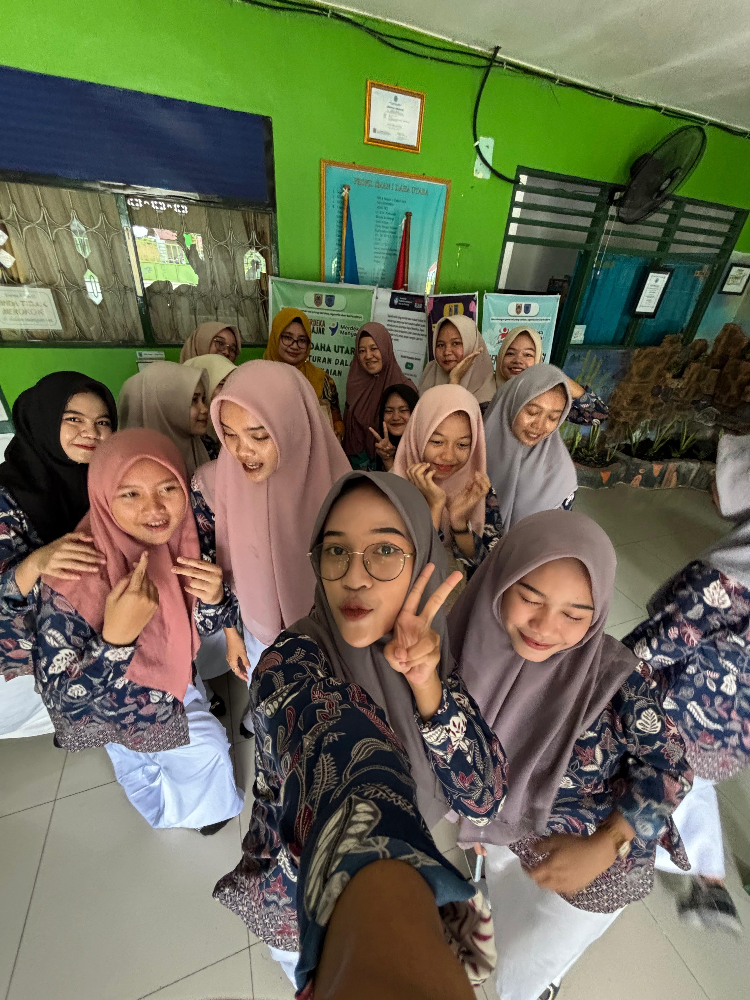
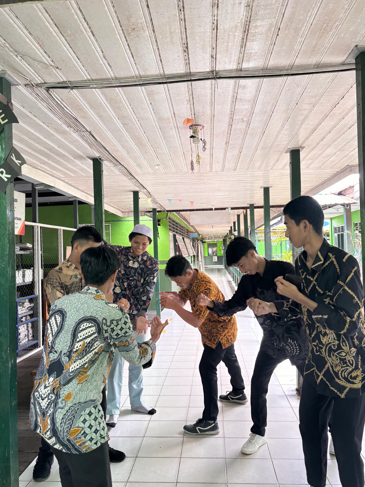
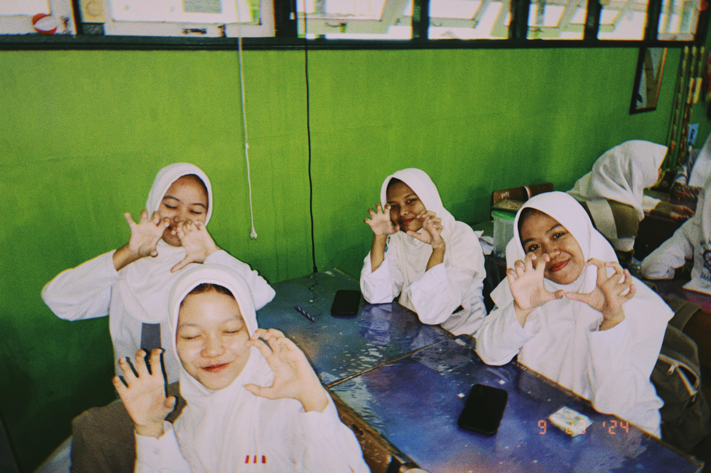
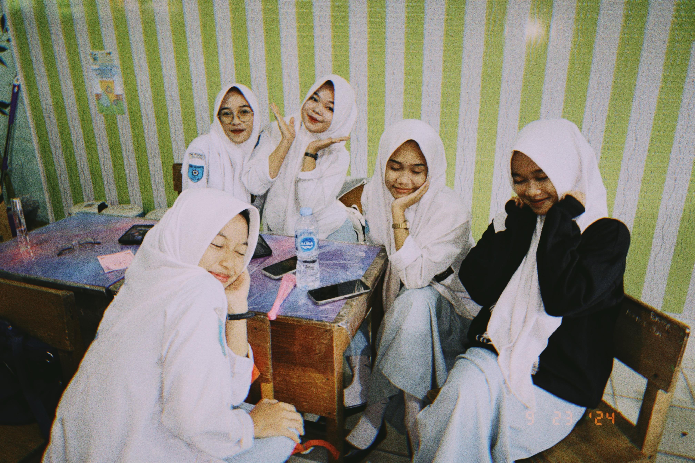
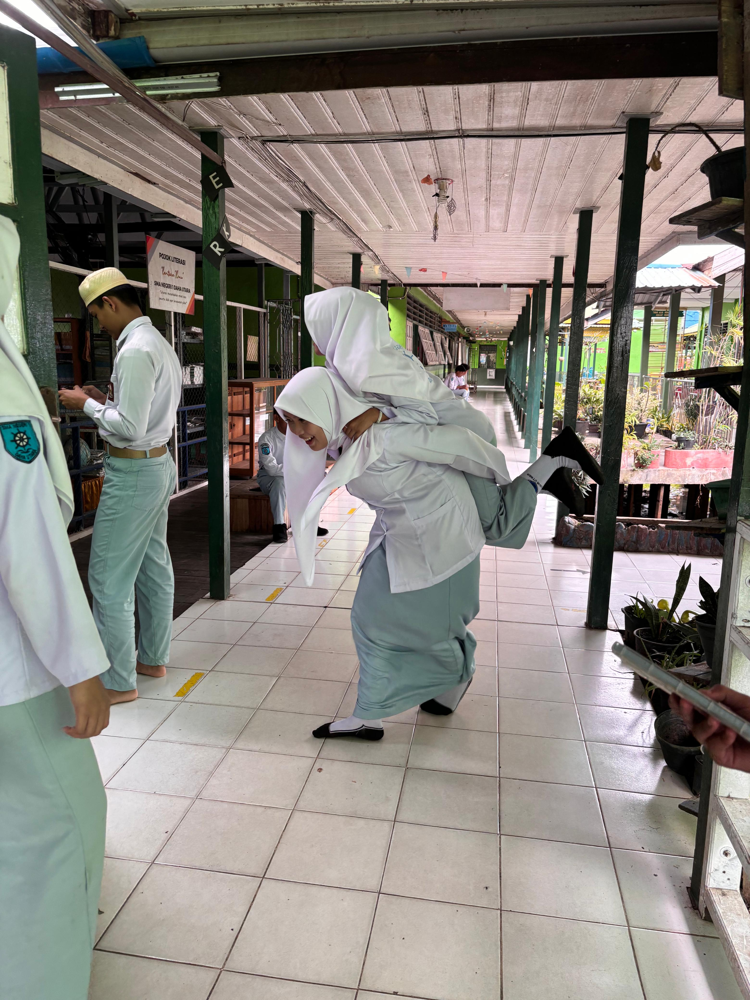
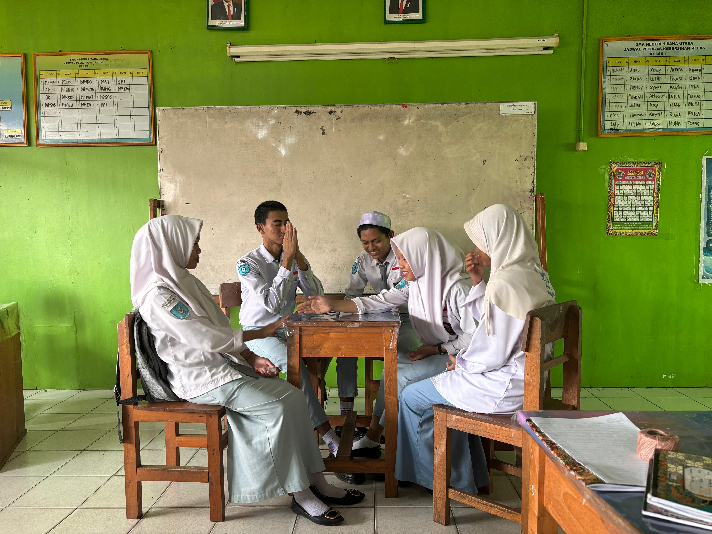

Website Kenangan Kelas 12 F5 SMAN 1 Daha Utara
12 F5
Kenangan Kita Bersama
Sebuah cerita tentang tawa, perjuangan, dan hari-hari yang tak akan terulang.
Kisah Kelas Kita
Kelas 12 F5 pernah menjadi dunia kecil tempat kita belajar mengenal hari. Di antara suara bel dan tawa Zikra yang pecah tiba-tiba, kita menanam kenangan tanpa sadar. Waktu berjalan pelan saat itu—atau mungkin kitalah yang terlalu sibuk hidup, hingga lupa bahwa setiap hari sedang menulis cerita.
Kini, ketika langkah kita mulai berpisah arah, barulah terasa betapa berharganya kebersamaan itu. Yang tertinggal bukan sekadar foto atau nama di daftar hadir, melainkan perasaan pernah tumbuh bersama. Dan di saat rindu datang tanpa alasan, kisah kelas ini akan selalu menjadi pengingat bahwa kita pernah menjadi satu cerita.
Dan jika suatu hari kita lupa arah pulang, semoga kenangan ini mengingatkan bahwa kita pernah berjalan sejauh ini—bersama.

Galeri Kenangan
Beberapa momen tak sempat kita rencanakan, tapi justru itulah yang paling ingin diingat.

Hari terakhir kita
Tertawa tanpa tahu esok akan berpisah
Satu kelas, banyak cerita
Foto buram, kenangan tajam
Kenangan yang diam-diam melekat
Hari biasa yang ternyata istimewa
Kita, tanpa sadar sedang berpamitan
Foto sederhana, rasa yang panjang
Foto ini diam, tapi rasanya masih bicara.
Kita tersenyum, tanpa tahu itu hampir selesai.Cerita Lama
Beberapa hal tak pernah benar-benar pergi, mereka hanya menunggu untuk dikenang kembali.
Bangku Paling Belakang
Tempat paling aman untuk tidur, menyontek PR lima menit sebelum bel masuk, dan berpura-pura paham pelajaran yang bahkan gurunya ragu.
Jam Kosong
Jam paling ditunggu, bukan karena bebas, tapi karena di situlah kita benar-benar menjadi diri sendiri.
Nama di Absen
Dulu terdengar biasa, sekarang rasanya asing— padahal itu pernah menjadi panggilan setiap hari.
Timeline Kita
Waktu berjalan, kita tumbuh di dalamnya.
Hari Pertama
Kita datang sebagai nama di daftar hadir, duduk bersebelahan tanpa tahu, bahwa kelak tawa dan lelah akan menyatukan kita lebih lama dari yang direncanakan.
Hari-Hari Biasa
Di antara jam kosong dan bel pulang, kita belajar hal-hal kecil: tentang sabar, tentang berbagi contekan, dan tentang pulang yang rasanya selalu terlalu cepat.
Menjelang Akhir
Kita mulai bercanda tentang masa depan, seolah waktu masih panjang, padahal tanpa sadar, hari-hari ini sedang mengemas dirinya sendiri.
Hari Terakhir
Tidak ada yang benar-benar siap berpamitan, hanya tawa yang dipaksakan, foto yang diulang berkali-kali, dan hati yang diam-diam ingin waktu berhenti.
Mungkin kita pernah punya perasaan yang sama,
tapi waktu memilih berjalan lebih cepat
dari keberanian kita untuk bicara.
Ada hal-hal yang tidak pernah terjadi,
namun entah kenapa
paling sering teringat.
Sampai Jumpa
Tidak semua pertemuan ditutup dengan perpisahan yang siap. Ada yang hanya berhenti, lalu hidup berjalan ke arahnya masing-masing.
Jika suatu hari kita bertemu kembali, semoga kita bisa saling tersenyum tanpa perlu menjelaskan apa pun.
— dari kami, yang pernah tumbuh bersama